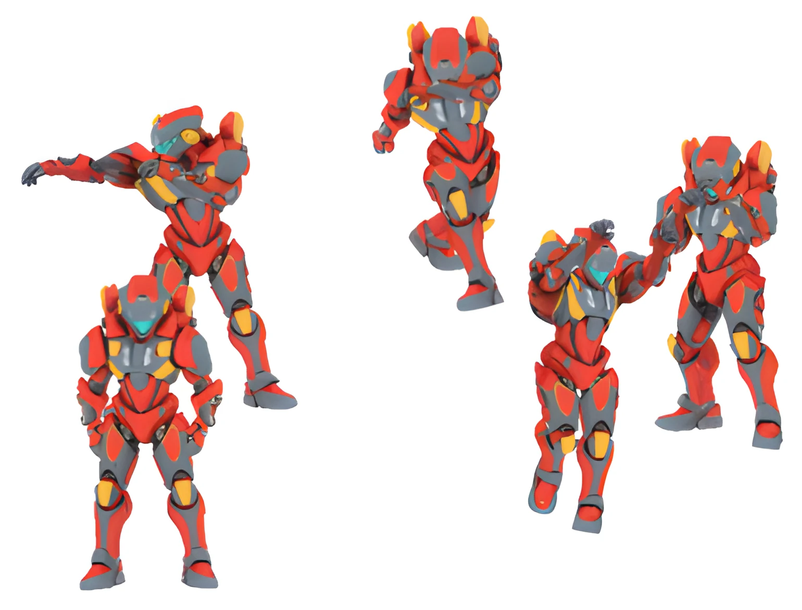

LiDAR-free
No specialized capture studio, multi-camera reconstruction, or sensor acquisition noise.
A reference-based dataset for dynamic volumetric quality assessment—generated from prompts, free from LiDAR acquisition noise, and released in synchronized mesh and point-cloud formats.
Why Prompt2Point
Captured volumetric datasets inherit sensor noise, reconstruction artifacts, and uncertain surface geometry. That makes it difficult to isolate the distortions introduced by compression itself. Prompt2Point starts from generated, topology-consistent animated meshes, then derives a synchronized point cloud for every frame.
The result is a controllable benchmark for full-reference quality metrics, perceptual modeling, compression analysis, and Generative 3D Quality of Experience research.
No specialized capture studio, multi-camera reconstruction, or sensor acquisition noise.
Per-frame textured OBJ meshes and colored PLY point clouds stay synchronized.
Locomotion, acrobatics, combat, gestures, climbing, and dance motions.
Multi-object configurations introduce controllable interaction and natural occlusion.
Reproducible workflow
A compact pipeline turns a semantic prompt into frame-addressable volumetric media for systems and QoE experiments.
A text or image prompt produces a textured static 3D object.
Automated rigging applies articulated motion and exports the full animation.
Blender samples the timeline into textured, temporally ordered meshes.
CloudCompare or PyMeshLab transfers textured surfaces into colored points.
Dynamic previews
Five semantically distinct avatars and a combined multi-object scene, rendered from the released volumetric sequences.
From the paper

Dataset contents
Every avatar is paired with five motion categories. The release also includes underlying animated assets and a documented Blender workflow for producing new spatial layouts and motion pairings.
| Avatar | Frames | Mean points / frame | Mesh vertices |
|---|---|---|---|
| Girl | 116–196 | 1.15M–1.44M | ≈ 329.6K |
| Robot | 91–300 | 1.09M–1.16M | ≈ 65.5K |
| Soldier | 158–500 | 0.86M–0.95M | ≈ 285.1K |
| WSoldier | 158–440 | 0.97M–1.10M | ≈ 412.4K |
| ZombieDoll | 144–406 | 1.05M–1.16M | ≈ 160.0K |
Calibrate objective geometry and attribute metrics against clean mesh ground truth.
Benchmark V-PCC, viewport adaptation, tile selection, and visibility-aware culling.
Study compression-induced and generation-induced artifacts under controlled motion.
Citation
Citation details will be updated when the final proceedings record is available.
@inproceedings{sidhu2026prompt2point,
title = {Prompt2Point: A Reference-Based Dataset for Dynamic Volumetric Quality Assessment},
author = {Sidhu, Jashanjot Singh and Bentaleb, Abdelhak},
booktitle = {IEEE International Conference on Quality of Multimedia Experience (QoMEX)},
year = {2026}
}